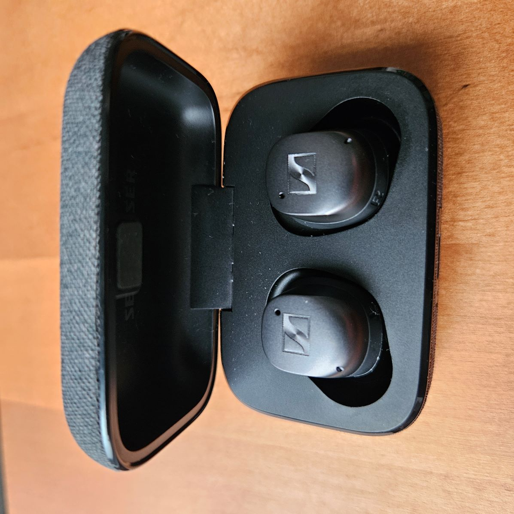
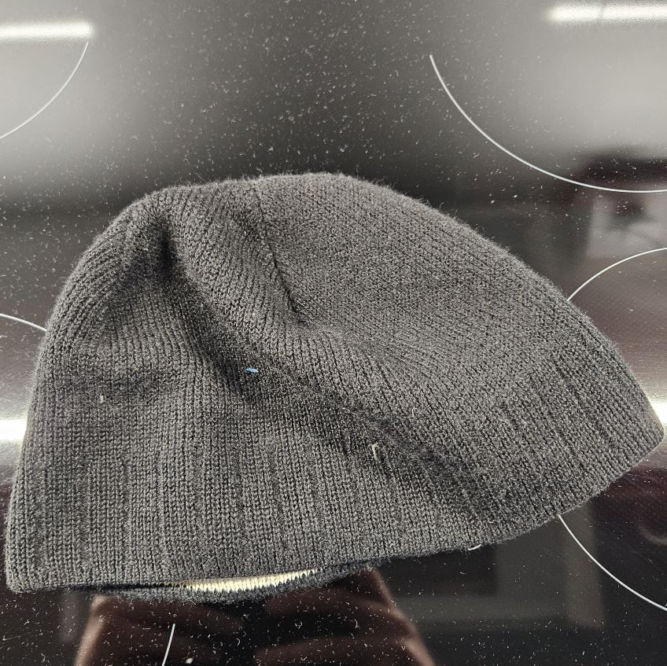
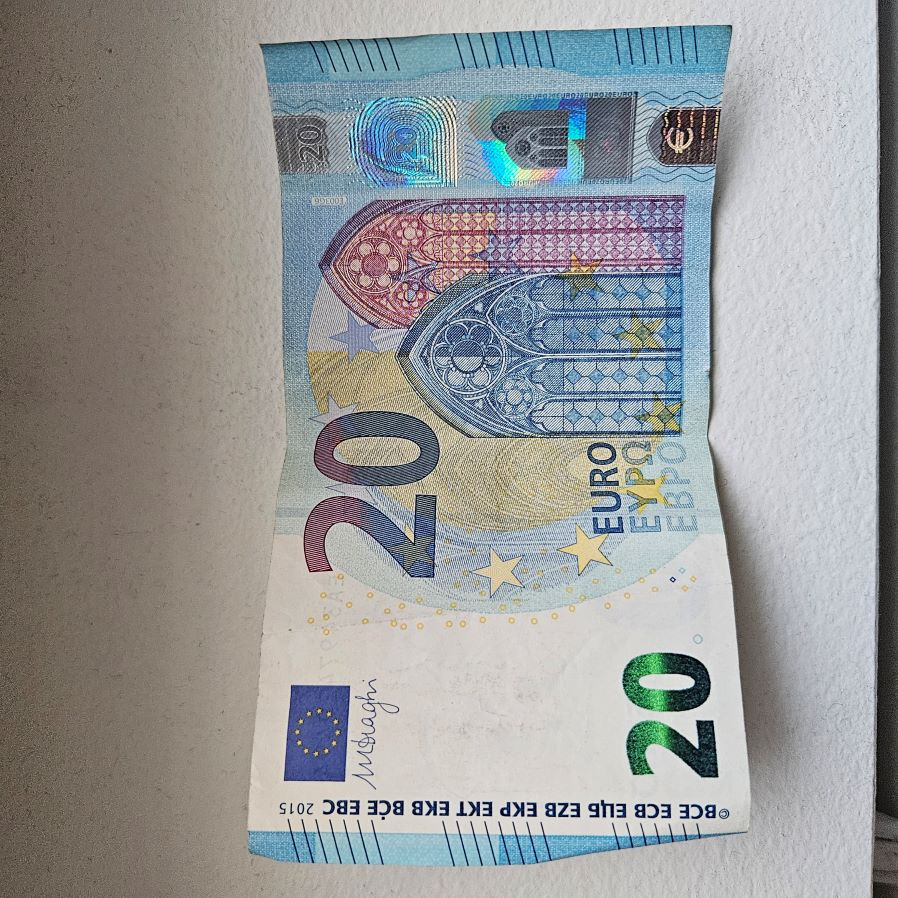

Vanha puhelinkamera voi olla erinomainen työkalu valokuvausreissuilla. Sen kompakti koko tekee siitä kevyen ja helposti mukana kuljetettavan, mikä on hyödyllistä pitkien vaellusten aikana. Vanhojen kameroiden ainutlaatuinen estetiikka voi tuoda kuviin nostalgista tunnelmaa, ja niiden käyttö opettaa valokuvauksen perusteita.
Langattomat kuulokkeet ovat erinomaisia kumppaneita valokuvausreissuilla. Ne tarjoavat käyttäjälleen vapauden liikkua ilman johtojen esteitä, mikä on erityisen tärkeää, kun liikutaan luonnossa tai ahtaissa tiloissa. Voit kuunnella musiikkia tai äänikirjoja, mikä auttaa keskittymään ja luomaan inspiroivaa tunnelmaa.
Pipot ovat loistava lisä varustukseen valokuvausreissuilla. Ne tarjoavat suojaa kylmältä, mikä on tärkeää erityisesti talvikuukausina, jotta voit keskittyä kuvaamiseen ilman häiriöitä. Pipot myös auttavat pitämään hiukset paikoillaan, mikä voi olla hyödyllistä tuulisissa sääolosuhteissa.
Raha on tärkeä osa valokuvausreissuja, sillä se mahdollistaa tarvittavien varusteiden, kuten kameroiden, objektiivien ja lisävarusteiden hankinnan. Hyvä varustus parantaa kuvien laatua ja mahdollistaa luovempia kokeiluja. Lisäksi raha auttaa kattamaan matkakustannuksia, kuten kuljetusta ja majoitusta, jolloin voit keskittyä valokuvaamiseen.